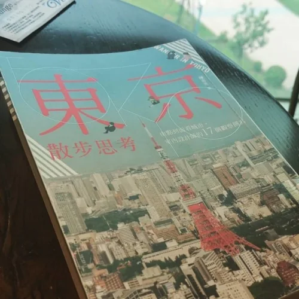

halafish: 這是一本很好閱讀、 也值得看的東京散策書 #不同於旅遊書的看花 #再走一次的不同體驗 #東京散步思考 ht...

這是一本很好閱讀、
也值得看的東京散策書#不同於旅遊書的看花
#再走一次的不同體驗
#東京散步思考
https://www.instagram.com/p/BzzxempnQFJo-7FUxvTvYum78Ht-wv-QWLxZfo0/?igshid=1cs705n0yw992
一、由點拓面的時間軸治理（空間與時間的讓渡） 破除單點開發的孤島思維，以建築退縮讓渡公共尺度；將都更視為新舊紋理的有機代謝，連施工過渡期皆轉化為願景的溝通介面。
- 深層解讀：真正的城市氣度不在於蓋出多高聳的地標，而在於私領域願意「退後一步」成全公領域（如虎之門之丘、六本木的開放綠地與動線串聯）。同時，東京將「時間」納入設計——從澀谷車站將漫長施工圍籬化為未來藍圖的預告，到百年東京車站與下町的活化，都市更新不是抹除過去的暴力重練，而是帶著歷史記憶的系統演進。
二、消弭摩擦的空間契約（異質群體的制度性包容） 設計的核心不在表象修飾，而在對異質需求的制度性包容。透過精準的分流與界定，不帶批判地讓高齡者、吸菸者與大眾各安其位。
- 深層解讀：多數城市習慣用「禁止」或「道德勸說」來處理衝突，東京則傾向用「空間設計」來承接人性。無論是街頭吸菸區的隔離氣流與視線遮蔽、巢鴨商圈對高齡者尊嚴與消費尺度的全面適配，或是新宿一區四貌的階層分流，好的都市設計是一份無聲的社會契約——承認人性的多元與不完美，並用物理空間化解群體間的排斥。
三、去殿堂化的知覺教養（微觀紀律與宏觀風骨的互證） 美感並非供奉於殿堂的奇觀，而是從餐桌器皿、街角植栽到書店的日常自覺；當微觀的生活尺度具備紀律，便自然沉澱為城市風骨。
- 深層解讀：作者從合羽橋道具街的一只碗盤、代官山融入住宅區的書店，一路看到整座城市的風景，點出了一個本質問題：城市樣貌是市民生活態度的總和投射。美學若只停留在美術館或觀光門面，終究是虛浮的造景；唯有當人們對「一頓飯的器皿比例」、「轉角一株花的視線」都有所講究，微觀的知覺教養才會由下而上撐起整座城市的格調。
《陳岳夫，東京散步思考：由點到面看城市，室內設計師的17個觀察側寫》
購書連結